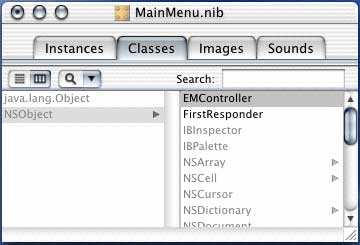

Adding a Controller

EdenMath can be viewed as a three tiered structure with the user interface, the backend responder, and the middle man intermediary. The controller takes the place of the middle man which communicates information between the user interface and the backend responder, which calculates the mathematical expressions.
- In the MainMenu.nib window, click on the Classes tab.
- If necessary, scroll around until you find the NSObject and click on NSObject to highlight it.
- Go to the Classes menu and click on Subclass NSObject.
- Double-click on MyObject to rename it. In this example, I named it EMController.
- Highlight the EMController in the MainMenu.nib. In the EMController Class Info palette, click on the + to the right of Outlet text. Rename myOutlet to displayField.
- Make an instance of the EMController class by going to the Classes menu and selecting Instantiate EMController.
- Now connect the EMController to the display. CTRL-click and drag a line from EMController to the text field in the interface window.
- Click the Connect button in the EMController (Custom) Info palette.